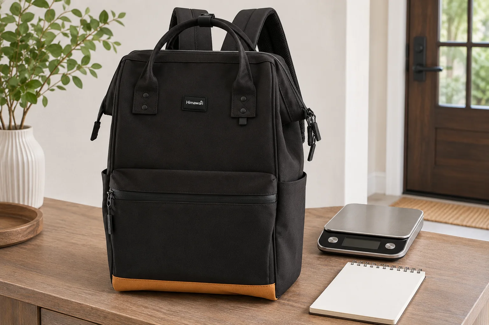
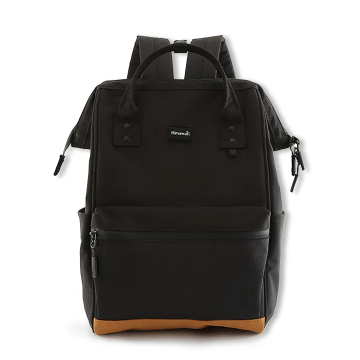
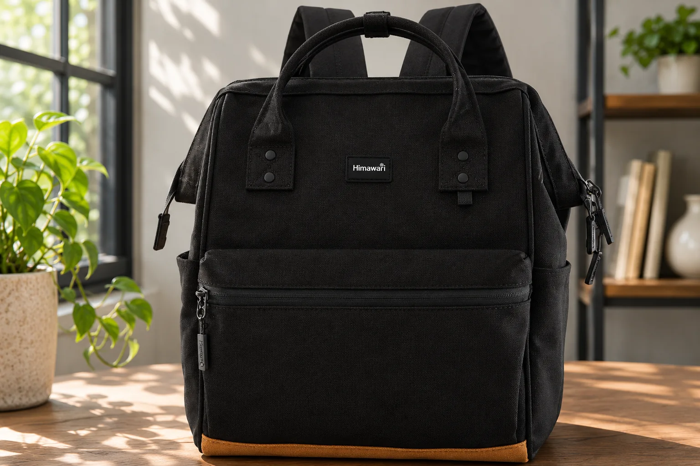

백팩 무게 800g, 몇 kg까지 담아도 된다는 뜻일까

백팩 제품표에 800g이라고 적혀 있으면 숫자는 분명합니다. 무엇을 잰 값인지는 항목 이름까지 읽어야 합니다. No.124 블랙의 공개 제품 정보에서 800g은 가방 무게로 제시된 수치입니다. 여기에 소지품을 몇 kg까지 넣어도 된다는 적재 한도는 함께 적혀 있지 않습니다. 빈 가방 무게를 알게 됐다고 운반할 수 있는 무게까지 알게 되는 것은 아닙니다.
이 차이는 무게 단위를 바꾸어도 남습니다. 800g을 0.8kg으로 쓰면 단위만 달라집니다. 가방이 얼마나 무거운지와 얼마나 견디는지는 별개의 질문입니다. 제품 무게를 여러 배로 곱하거나 특정 숫자를 더해 최대 적재량을 만드는 계산도 근거가 없습니다. No.124의 외부 크기 가로 28 × 세로 40 × 폭 17cm 역시 그 계산에 넣을 하중 자료가 아닙니다.
제품 무게는 가방을 비교할 때 읽습니다
가방 자체 무게는 후보를 고를 때 쓸 정보입니다. 같은 조건으로 잰 값이라면 어느 제품이 더 무거운지 비교할 출발점이 됩니다. 다만 측정에 포함된 부속품이 다른 경우에는 그 조건도 같이 읽습니다. No.124의 표에 적힌 800g은 공개 사양값으로 남기며 이 글에서 직접 저울에 올려 확인한 무게로 표현하지 않습니다. 사진 속 저울은 옆에 따로 놓은 소품입니다.
실제 사용 중인 가방을 재면 작은 소지품이나 달아 둔 장식까지 포함될 수 있습니다. 제품표의 수치와 다르게 나왔다고 곧바로 가방의 성능이 달라졌다고 판단하지 않습니다. 어느 옵션을 어떤 상태로 쟀는지부터 맞춰야 비교할 대상을 알 수 있습니다. 직접 잰 값이 더 크든 작든 그 결과를 최대 적재량에 더하거나 빼는 방식은 성립하지 않습니다. 무게를 잰 목적에 맞춰 결과를 읽을 필요가 있습니다.
짐을 넣은 총중량은 또 다른 기록입니다. 출발할 때 가방과 내용물이 함께 얼마나 나가는지 알려주지만 그 상태가 제품에서 허용한 사용인지까지 검증하지는 않습니다. 손으로 잠깐 들어 보아 버텼다는 관찰도 마찬가지입니다. 측정값, 잠깐의 사용 경험, 제조사가 밝힌 사용 한도는 서로 바꾸어 쓸 자료가 아닙니다. 숫자가 있다는 이유만으로 모든 질문에 답을 붙일 수는 없습니다.

허용 하중에는 적용 부위와 조건이 붙어야 합니다
적재 한도를 안내한 자료가 있다면 숫자 옆의 대상을 읽습니다. 가방 전체인지, 특정 포켓인지, 손잡이나 별도 부품인지가 중요합니다. 부위 하나에 관한 수치를 본체 전체의 사용 한도로 옮기지 않습니다. 제품의 옵션과 구성, 안내가 나온 시점도 내가 고른 가방과 맞는지 확인합니다. 다른 모델에서 찾은 수치를 같은 브랜드라는 이유로 가져오는 것도 피합니다.
같은 무게를 어떻게 받치는지 역시 질문에 포함할 조건입니다. 가방 안에 고르게 나누어 담는 경우와 바깥의 작은 부품 한 곳에 매다는 경우는 배치가 다릅니다. 손잡이 하나에 매달아 보는 시험을 하거나 포켓을 당겨 강도를 알아내려 할 필요는 없습니다. 이 글에서 No.124의 어느 부품에도 하중을 걸어 시험하지 않았고 허용 적재량을 새로 정하지도 않았습니다.
판매처가 한도를 안내하지 않았다면 미기재 상태로 둡니다. 이때는 이 가방이 튼튼한가요보다 구체적으로 물을 수 있습니다. No.124 블랙에 담을 물건의 종류와 예상 무게를 알려주고 해당 사용에 관한 제조사 안내가 있는지 확인하는 방식입니다. 답변에서 어느 모델과 어느 부위의 조건을 말하는지 알 수 있어야 합니다. 자신이 만든 예상 숫자를 제품 사양처럼 문의에 넣지는 않습니다.
두 손잡이와 둥근 부품으로 계산할 수는 없습니다
No.124 블랙 사진에는 위쪽 손잡이 두 개와 부착부의 X자 봉제선, 둥근 검정 부품들이 보입니다. 앞쪽에는 가로 지퍼 포켓이 있고 아래에는 갈색 띠가 놓여 있습니다. 이 관찰은 형태를 파악하는 데 쓸 자료입니다. 손잡이가 두 개라고 적재 한도를 두 배로 계산하거나 둥근 부품 수만큼 강도가 더해진다고 해석할 수는 없습니다. 부품의 재료와 안쪽 연결 상태도 사진만으로 확정하지 않습니다.
특정 연결 부위를 가까이 보여 주는 사진도 전체 가방의 강도 시험을 대신하지 않습니다. 봉제선이 선명해 보이는지와 어떤 조건에서 어느 정도를 견디는지는 확인 방법부터 다릅니다. 큰 사진에서 보이지 않던 부품을 찾는 데에는 확대가 도움이 되지만 확대할수록 허용 하중이 더 정확해지는 관계는 없습니다. 이 글에서 가까이 찍은 연출 사진은 눈에 보이는 배치를 설명하기 위해 사용했습니다.

수납과 착용 판단도 한도 표기와 나누어 둡니다
물건이 안으로 들어간다는 사실만으로 그 무게까지 적합하다고 결론내리지는 않습니다. 반대로 크기가 작아도 무거운 물건이 있을 수 있습니다. 본체의 외부 치수는 가방끼리 크기를 비교하는 값이며 안쪽 여유나 최대 적재량을 한꺼번에 알려주지 않습니다. No.124를 고를 때에는 넣고 꺼낼 물건의 크기를 확인하는 질문과 들고 다닐 무게에 관한 질문을 각각 남깁니다.
몸에 멨을 때 편안한지도 별도로 확인할 문제입니다. 제품이 안내한 범위 안에서 사용하더라도 내가 오래 메기 편한지는 이동 시간과 착용 상태에 따라 확인해야 합니다. 800g이라는 숫자를 편안함의 등급으로 읽거나 가방이 견디는 최대치가 사람에게도 적당한 무게라고 바꾸어 말할 수는 없습니다. 신체에 관한 특정 중량 비율이나 의학적 기준을 이 글에서 제시하지 않습니다.
No.124의 사양을 메모한다면 제품 무게 칸에는 800g, 최대 적재량 칸에는 현재 안내에서 미확인이라고 적을 수 있습니다. 두 칸을 억지로 같은 숫자로 채우지 않아야 다음 질문이 남습니다. 가방을 비교할 자료는 이미 하나 얻었습니다. 들고 다닐 짐의 조건이 정해졌다면 그 사용에 맞는 안내가 있는지 이어서 확인하면 됩니다. 알게 된 무게와 아직 모르는 한도를 구분하는 것이 출발점입니다.